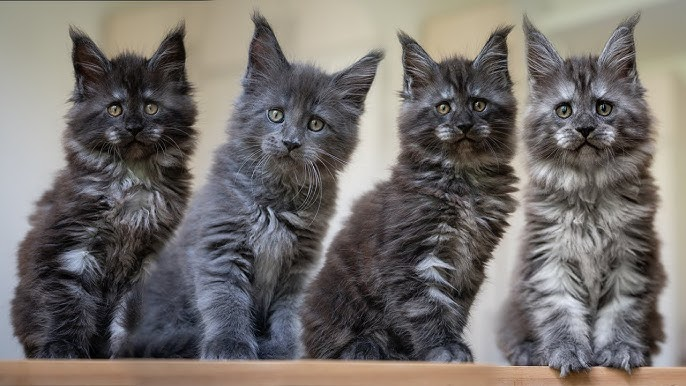
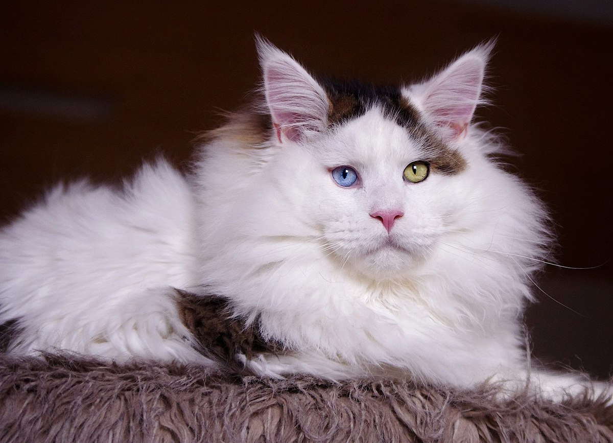
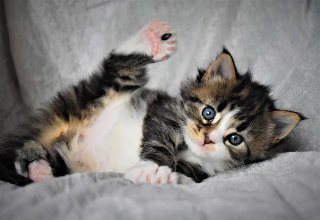

The Maine Coon is a large domesticated cat breed. One of the oldest natural breeds in North America, the breed originated in the U.S. state of Maine, where it is the official state cat.
The Maine Coon is a large and social cat, commonly referred to as "the gentle giant." The Maine Coon is predominantly known for its size and dense coat of fur which helps it survive in the harsh climate of Maine. The Maine Coon is often cited as having "dog-like" characteristics.
History
The Maine Coon is one of the largest domesticated cats. It has a distinctive physical appearance and valuable hunting skills. The breed was popular in cat shows in the late 19th century, but its existence became threatened when long-haired breeds from overseas were introduced in the early 20th century. The Maine Coon has since made a comeback, and in 2023 the Maine Coon overtook the Exotic, becoming the second most popular pedigree cat breed in the world.
Description
Fur coat
The Maine Coon is a long- or medium-haired cat. The coat is soft and silky, although texture may vary with coat color. The length is shorter on the head and shoulders and longer on the stomach and flanks, with some cats having a leonine ruff around their neck. Minimal grooming is required for the breed compared to other long-haired breeds, as their double coat is mostly self-maintaining owing to a light-density undercoat. The coat is subject to seasonal variation,[16] with the fur being thicker in the winter and thinner during the summer.
Maine Coons have several physical adaptations for survival in harsh winter climates. Their dense water-resistant fur is longer and shaggier on their underside and rear for extra protection when they are walking or sitting on top of wet surfaces of snow or ice.[17] Their long and bushy raccoon-like tail is resistant to sinking in snow, and can be curled around their face and shoulders for warmth and protection from wind and blowing snow. It can even be curled around their backside like an insulated seat cushion when sitting down on a frozen surface.
Large paws facilitate walking on snow and are often compared to snowshoes.[17] Long tufts of fur growing between their toes help keep the toes warm and further aid walking on snow by giving the paws additional structure without significant extra weight.[18] Heavily furred ears with extra long tufts of fur growing from inside can keep warm more easily.
Coat colors
Maine Coons can have any colors that other cats have. Colors indicating crossbreeding, such as chocolate, lavender, the Siamese pointed patterns or the "ticked" patterns, are not accepted by some breed standards. This is not universal; the ticked pattern, for example, is accepted by TICA and CFA.[13] The most common pattern seen in the breed is brown tabby.[19] All eye colors are accepted under breed standards, with the exception of blue or odd-eyes, i.e. heterochromia iridium (two eyes of different colors), in cats possessing coat colors other than white.
Size
The Maine Coon was considered the largest breed of domestic cat until the introduction of the Savannah cat in the mid-1980s, yet it is still the largest non-hybrid breed.[citation needed] On average, males weigh from 18 to 22 lb (8.2 to 10.0 kg), with females weighing from 12 to 15 lb (5.4 to 6.8 kg).[20] The height of adults can vary between 10 and 16 in (25 and 41 cm) and they can reach a length of up to 38 in (97 cm), including the tail, which can reach a length of 14 in (36 cm)[21] and is long, tapering, and heavily furred, almost resembling a raccoon's tail. The body is solid and muscular, which is necessary for supporting their weight, and the chest is broad. Maine Coons possess a rectangular body shape and are slow to physically mature; their full size is normally not reached until they are three to five years old, while other cats take about one year.
In 2010, the Guinness World Records accepted a male purebred Maine Coon named "Stewie" as the "Longest Cat", measuring 48.5 in (123 cm) from the tip of his nose to the tip of his tail. Stewie died on February 4, 2013, from cancer at his home in Reno, Nevada, at age 8.[23][24] As of 2015 the living record-holder for "Longest Cat" is "Ludo", measuring 46.59 in (118.3 cm). He lives in Wakefield, England, in the United Kingdom.[25] Large Maine Coons can overlap in length with Eurasian lynxes, although with a much lighter build and lower height.
Polydactilism
Many of the original Maine Coon cats that inhabited the New England area possessed a trait known as polydactylism (having one or more extra toes on a paw).[17] With the 1970s revival of the interest in the breed, Maine Coon cats were noted to show an increased incidence of polydactylism compared to other breeds. Subsequently, breeders of show-standard cats were advised to regard this variation as undesirable and to offer affected kittens as household pets. The trait later became separately certified by some organizations, like The International Cat Association (TICA).[27] Meanwhile, in increasing numbers of cat fancy competitions, the trait is no longer marked down.
Polydactylism is rarely, if ever, seen in Maine Coons in the show ring, since it is not allowed by competition standards.[28] The gene for polydactylism is a simple autosomal dominant gene.[29] The polydactylism results from genetic problems which are not encouraged for breeding.[30] Polydactyly in Maine Coon cats is characterised by broad phenotypic diversity.[31] Polydactyly not only affects digit number and conformation, but also carpus and tarsus conformation.[32] The trait was almost eradicated from the breed due to the fact that it was an automatic disqualifier in show rings.[33] Some private organizations and breeders were created in order to preserve polydactylism in Maine Coon cats.
Health
Life expectancy
Pet insurance data obtained from a study during years 2003–2006 in Sweden puts the median lifespan of the Maine Coon at > 12.5 years. 74% lived to 10 years or more and 54% lived to 12.5 years or more.[34] A UK study found a life expectancy of 9.71 years compared to 11.74 years overall.